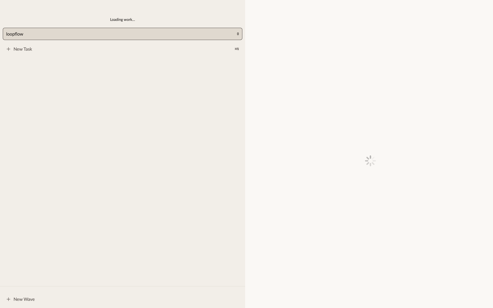
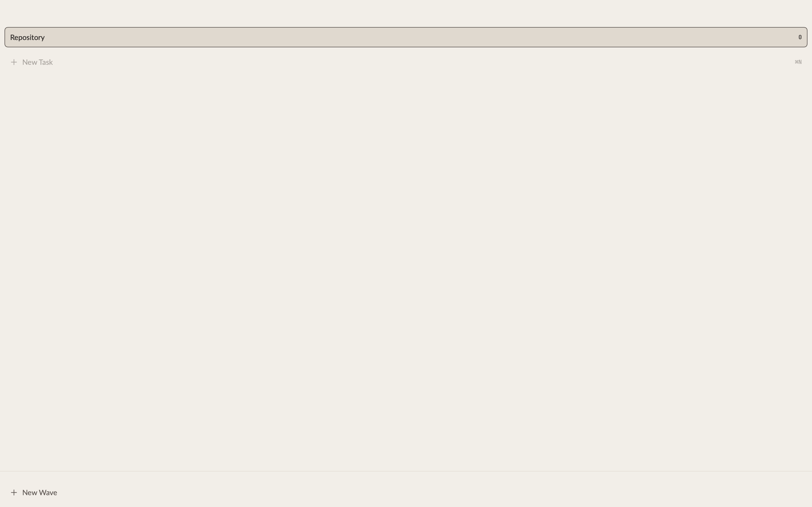
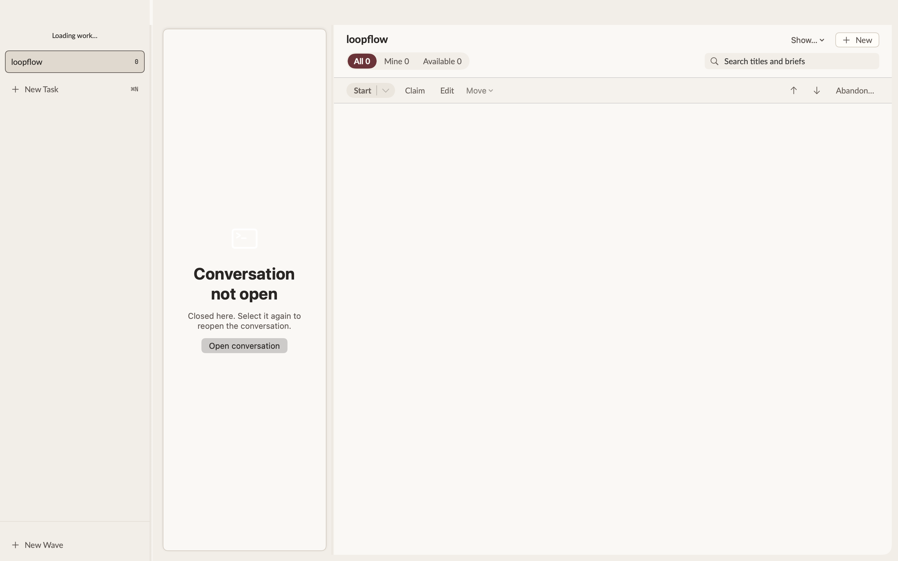
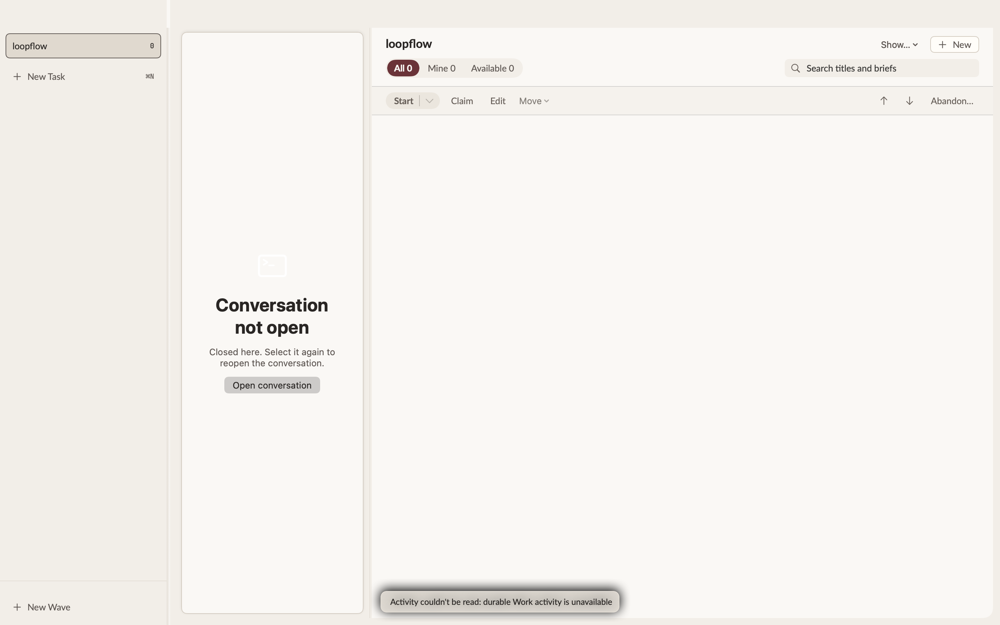
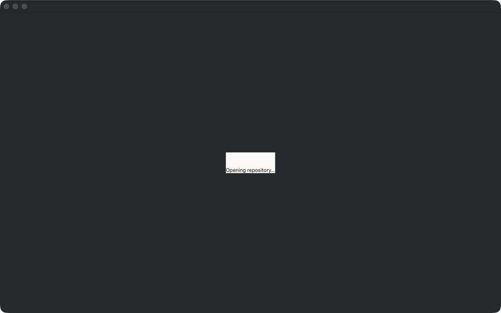

Run 2026-11-20, 16:50–17:15, headless. The screen was locked the whole time
(CGSSessionScreenIsLocked = true). The shared ~/Applications/Loopflow Dev.app
was serving ~/.lf-copy for LOO-515, which is at its demo step, so it was left alone.
The branch app ran as a second bundle, ~/Applications/Loopflow Dev QA.app
(com.loopflow.mac.qa9a2459.dev), built by the launcher's own build and install functions.
| Scenario | Result | What was seen |
|---|---|---|
| Swift-only build | works | A Swift build took 22 s; no Cargo process ran. The bundle has only Contents/MacOS/Loopflow Dev, no LaunchAgents, and passes codesign --verify --deep --strict. |
| Finds the installed server without installing | works | lf server status listed client Loopflow 0.16.0+00f9185b5 on instance 5f5bc7b3, revision 9, sha aeab8b41. It was the same instance before and after. |
| Live backlog | works | lf desktop ls listed 22 Working Tasks from the real Machine. |
| Task created by the CLI shows up | works | lf task create → lf desktop view task:467db5 resolved it as the view's only member, and its tile carried the title. |
| Rename updates in place | works | lf task update --title 'Renamed QA Task'; within 2 s the running Dev's tile list read Renamed QA Task, with no relaunch. |
| Second view on a running Session | works | The original view was lf resume --task 467db5 -a claude in tmux. Dev's pane attached the same terminal (lf session attach --terminal e015397d … --session 0f140df7 in both process lists). There was one claude (PID 14809) throughout, so no second provider started and no history was resumed. Text typed in Dev appeared in the original view, and text typed in tmux appeared in Dev. |
| Close and reopen the Dev pane | works, with a rough edge | close -p session left the pane attachment: failed. Then show answered "already shown" and send answered "no native surface". focus -p session reattached it (new surface, attach PID 39402) and shared input worked again. Claude 14809 kept running across all of it. |
| Server and holders untouched | works | Holders before and after: 706 2052 23818 25807 33575 56377 70570 84595 84987. Server instance and executable unchanged. |
| Restored selection that's gone | works | A fresh window restored completed Task 4bd948 and reported "Selected Task is not available in the current planning reading" instead of failing. |
| Fixture screenshots (6) | fixed one; one still wrong | See below. |
AttributeGraph --sheet | passes | Sheet over the infrastructure Wave: 136 log lines, 0 cycle mentions, PASS. |
| Mounted benchmark | not run | Load average was 17 with about 2.6 cores busy from other worktrees' builds; preflight requires under 0.1 core. |
The empty-workspaces fixture's roadmap JSON had no tasks key, which
RoadmapSnapshot now requires. The fixture caught the error and rendered its failure state.
That looked like an empty backlog, apart from the toast "Activity couldn't be read: The data couldn't be read because it is missing."
The same failure is on main, because WorkFixture.swift was untouched by this branch.
The fix adds "tasks":{"state":"ok","truncated":false,"items":[]} and moves the payload into
WorkFixture.emptyRoadmap(). A new test, MockWaveFixtureTests/emptyWorkspacesDecode, decodes both fixture
payloads. It failed with keyNotFound(tasks…truncated) before the fix and passes after
(6/6 in swift test --filter MockWaveFixtureTests).
Now that the fixture decodes, the pipeline still passes --repo. The model then waits forever for a repository Task
list that the fixture doesn't supply, so the screen stays on "Loading work…" with a spinner. Without --repo, it shows only a full-width
sidebar with a "Repository" row. Which screen the empty shot should show is a product decision; it's recorded in questions.md.
Empty, wide, after the fix:

Empty, without --repo:

Loading and error, both fine:


lf desktop enter 'Renamed QA Task', which mounted the Session pane while
the tmux view was live. Ghostty's Breakpad caught it at 00:58:34Z. The envelope was consumed on the next launch before it
could be symbolized. Two repeats of the same sequence under lldb did not crash. This is in session-pane code that the branch doesn't touch.lf session attach child for each retained workspace in the
Machine's saved layout. They include other Tasks' conversations. While Dev's pane was attached, the disposable Session ran at Dev's width (120 columns)
and the 160-column tmux view went stale until it typed. After that, Dev's capture was garbled at the wrong width. Viewing
personal conversations from a QA Dev can resize them. This is existing Desktop behavior, not this branch's.New Task · 9a2459 QA) built and signed into a separate QA bundle in 4.7 s, with no Rust step.
Launched with open -g so it would not take focus, the window stayed off screen on “Opening repository…”. The live server logged
only a config.theme read and lf desktop state listed no windows: Dev does not open Work until its window is shown.
Bringing it forward would have taken keystrokes from the person at the keyboard, so the run stopped there. Server instance 5f5bc7b3,
hash aeab8b41 and all nine holder PIDs were unchanged. Disposable Task 12e983 was abandoned, and the edit was reverted.

lf desktop capture without --task resolved this checkout's Task and printed an old OpenCode Session of 9a2459.
That is a footgun, and it's now in the QA notes.Task 467db5 was abandoned (canceled; its Linear writes are queued behind a rate limit). Its worktree and branch were removed. The QA bundle was unregistered and deleted, and the tmux server, lldb and QA Dev were stopped. The shared Dev and LOO-515's processes were never touched. The second run left nothing behind: its QA bundle was unregistered and deleted, and Task 12e983 was canceled.